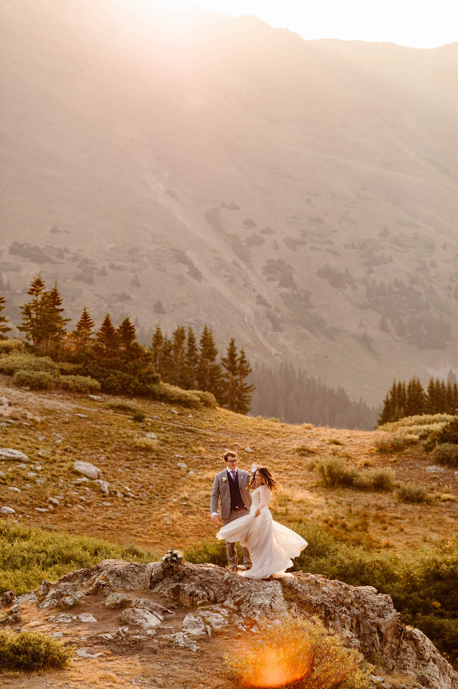
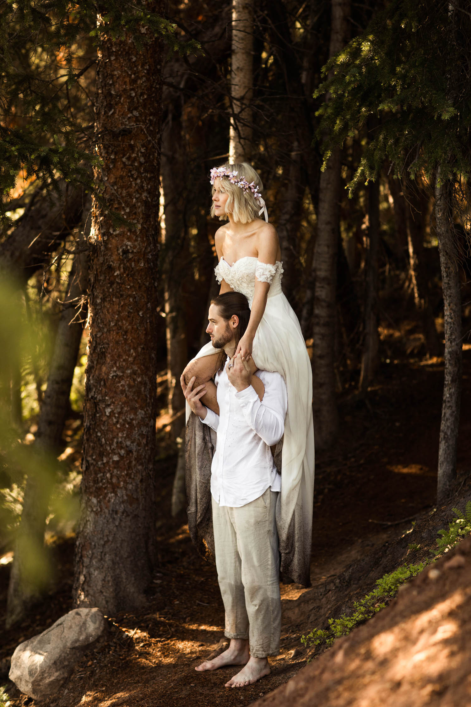
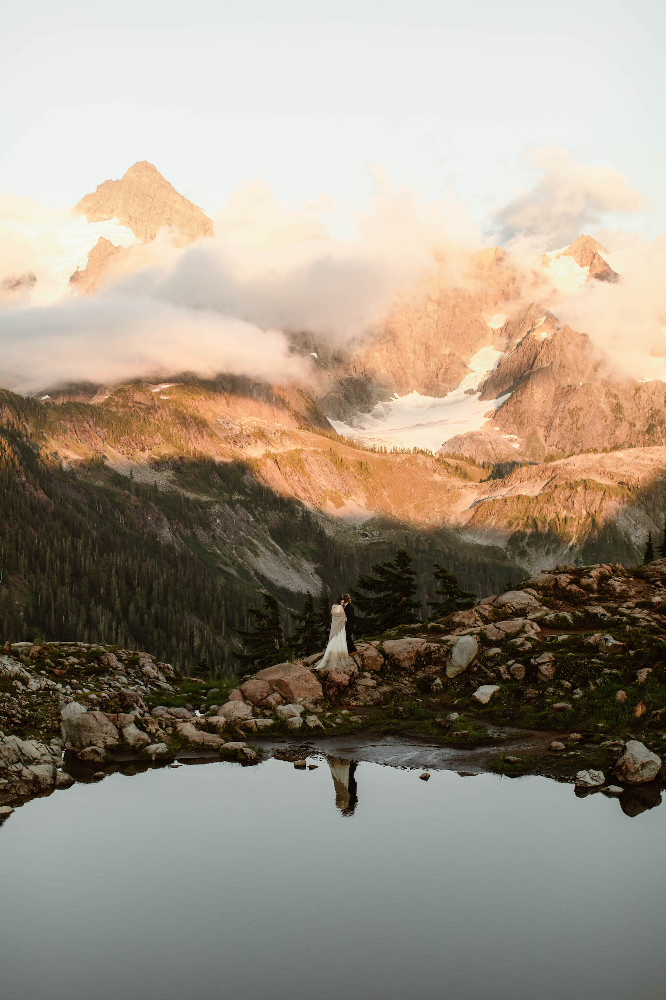

All About My Day Job - Documenting Elopements
By night, I'm a student, but by day, I'm what's called an adventure elopement photographer. So what exactly is that? Essentially, I photograph couples who have chosen to get married in adventurous locations with no guests present (or a small number of guests). It's what we in the wedding industry lovingly refer to as adventure elopements.
There are a number of things that go into my job, as it's a bit different than what your traditional wedding photographer might do. Here's a sample of the services I offer to my clients:
- I help all my couples find an epic and adventurous spot to say their vows
- I craft complete timelines for their elopement day, from start to finish
- I provide vendor recommendations, including everything from flowers to dresses
- I provide my couples with over 100 pages worth of planning guides and resources
- And that's just the icing on the cake (pun intended!)
Curious What an Elopement Day Looks Like?
Adventurous elopements are a strange concept to most people, but they're some of the most incredible types of weddings, if you ask me! A picture is worth a thousand words, so here are some photos of some of my couples, so you can get a feel for what it is that I do.
  